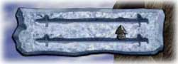

SOPRAVVIVERE
SOPRAVVIVERE
Questa modalità multi-player è fondamentalmente una competizione "ad esclusione". Per danneggiare i tuoi avversari li urti ad alta velocità e lanci contro di loro le tue armi. Ogni qualvolta un giocatore viene danneggiato, il suo misuratore di salute, nella parte alta dello schermo, diminuisce. Quando il misuratore di salute di un giocatore è esaurito, questo viene eliminato dal gioco.

Il misuratore di salute